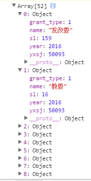

var scale= d3.scale.linear().domain([0,50]).range([0,500])
一.linear(x):在定义域中的X，返回值域对应的值
scale(10)=100
二.scale.invert(y):为值域中的Y返回定义域中的X
scale.invert(100)=10
三.scale.domain(arr):为比例尺设置定义域

d3.max(arr):输出数组中的最大值
d3.min(arr):输出数组中的最小值
四.scale.range(arr):为比例尺设置值域
五.scale.rangeRound(arr):为比例尺设置值域（且值是四舍五入）
六.scale.clamp(boolean):比例尺是否闭合，设置成true为闭合状态